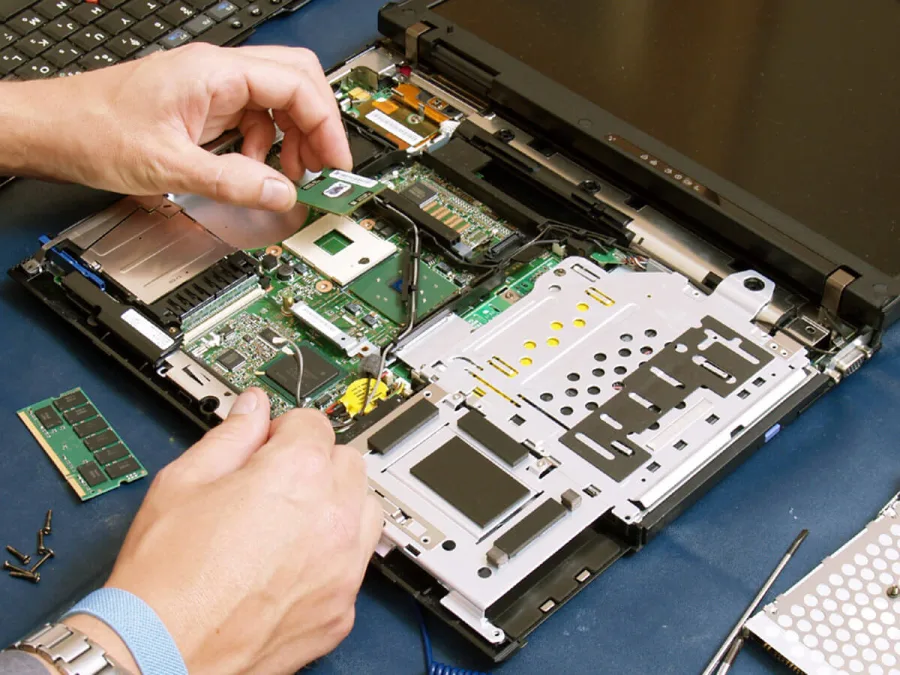
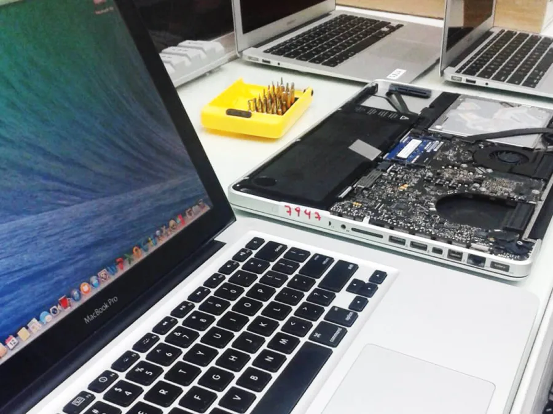

Notebook e MacBook
Reparo de placa, troca de tela, teclado, bateria, conector e correção de superaquecimento.
Avaliar equipamento →Assistência técnica no ABC Paulista
Diagnóstico claro e reparo especializado para notebooks, computadores e MacBooks — sem empurrar serviço que você não precisa.
Soluções especializadas
Problemas diferentes pedem análises diferentes. Nossa equipe identifica a causa, explica as opções e só então inicia o reparo autorizado.
Reparo de placa, troca de tela, teclado, bateria, conector e correção de superaquecimento.
Avaliar equipamento →Diagnóstico de componentes, montagem, limpeza técnica, refrigeração e substituição de peças.
Avaliar equipamento →Formatação, remoção de vírus, instalação de SSD, expansão de memória e recuperação do sistema.
Avaliar equipamento →Suporte para estações, redes, servidores, organização de cabeamento e contratos corporativos.
Falar sobre sua empresa →

Assistência técnica especializada
Na 4Chip, notebooks, computadores e MacBooks passam por análise técnica antes do orçamento. O objetivo é encontrar a causa do defeito e indicar o reparo adequado — de componentes e placa-mãe a tela, teclado, SSD, memória e sistema.
Sem complicação
Um processo direto para reduzir incerteza, evitar surpresas e devolver seu equipamento pronto para a rotina.
Começar atendimentoEnvie pelo WhatsApp o modelo do equipamento e os sintomas que percebeu.
O equipamento é analisado e você recebe uma explicação objetiva com a solução indicada.
O reparo só começa depois da sua autorização. Se houver mudança, você é avisado.
Após o serviço, o equipamento passa por testes antes de ser liberado.
Reputação local
“Equipe show de bola, já fiz três trabalhos com eles, todos impecáveis.”
“Bom atendimento, entrega no prazo, profissionais atenciosos.”
Dúvidas frequentes
Se a sua dúvida não estiver aqui, descreva o problema pelo WhatsApp.
Atendemos as principais marcas de notebooks e computadores, além de MacBooks. Envie o modelo exato para confirmarmos a disponibilidade de peças e o tipo de reparo.
O valor depende da causa do defeito, da peça e do serviço necessário. A análise permite apresentar um orçamento responsável antes de iniciar o reparo.
Informe à equipe se há dados importantes antes do atendimento. Quando o armazenamento está saudável, o reparo pode ser planejado para preservar os arquivos; cópias de segurança continuam recomendadas.
Sim. A 4Chip atende empresas com manutenção de computadores, redes, servidores e infraestrutura. Fale com a equipe para avaliar sua necessidade.
Na Av. Índico, 196, Jardim do Mar, em São Bernardo do Campo — próximo ao centro e com fácil acesso para todo o ABC.
Atendimento em São Bernardo
Explique o que aconteceu. Nossa equipe orienta o próximo passo e confirma como levar o equipamento.
Chamar no WhatsApp